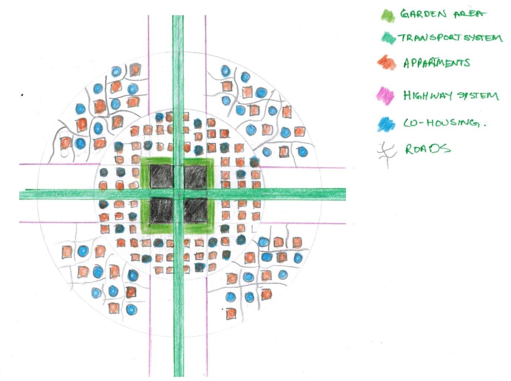

The Issue of Urban Sprawl
Urban Sprawl is the expansion or migration of a population away from central urban areas
to low-density residential developments in new areas.
Urban Sprawl has a negative connotation attached to it due to the number of issues it causes.
The following are the most common impacts of Urban Sprawl:
- Increased emissions:
Longer travel times to and from work, as a result of living further away,
leading to greater motor vehicle emissions.
- Greater social disconnectivity:
Living in low-density residential developments reduces the opportunity
for interaction with others. Can lead to feelings of isolation and disconnection.
- Ecological footprint:
Consumption of large areas of land leads to a larger ecological footprint.
It consumes farming and agriculutral land, and causes a loss of wildlife habitat.
- Poorer lifestyle:
Living futher away from central urban areas increases the reliance on personal
motorvehicles. Studies have shown a decrease in physical activity and greater
health problems.
- Economical disparity:
Wealthier people are able to move away from central urban areas due to their
higher buying power. Thus, the poorer populations are left behind and an
economical imbalance is created based on location.

Urban Sprawl in Sydney
Urban sprawl is prevalant in Sydney most predominantly occuring in the Western suburbs of Sydney. in currently occuring in the Western Suburbs of Sydney,
concentrated within the North West and South West regions. In these suburbs there has been an increase in low density living due to new residential
developments. Some of these suburbs include: Kellyville, The Ponds, Rouse Hill, Paramatta, Blacktown, Penrith, Campbelltown, and Liverpool.
The collection of data below provides evidence of Urban Sprawl in Sydney as it identifies the key characteristics and problems associated with Sprawl.
1) Population Density of Sydney:
From the Map it is clear that the population density decreases away from the central urban region of Sydney (Sydney CBD).
Larger areas of land are aquired as people move further away from Sydney due to availability.
2) Density of types of Dwelling in Sydney:
From the Map it can be seen that there is a higher density of apartments in and around Sydney CBD (Inner East), and a lower density of houses.
However, shifting away to the Greater Western and Southern suburbs of Sydney, there is a sharp decline in the density of apartments as they are
been replaced by housing. This is a major characteristic of urban sprawl, as greater land availability away from central urban areas generally
correlates to an increase in housing developments.
3) Number of Motorvehicles owned around Sydney:
Comparing the four maps we can see that a strong pattern has developed. Residents who live in or very close to Sydney CBD generally own a maximum
of only one motor vehicle, with a large population owning none. However, the reliance on motorvehicles increases further away from the CBD as single
households require up to three vehicles. This is an indication of public transport being time consuming and inconvienant to those living further away
from the CBD. This data also relates directly to the increased emissions produced by the Outer regions of Sydney, as well as the decrease in health
quality and lifestyle.
Concept Design
The issue of Urban sprawl can be resolved through appropriate urban planning.
Our design, despite being quite radical, eliminates the problem or
Urban sprawl and creates a smarter, sustainable and functioning city.
The design begins by grouping a number of small to medium sized suburbs into one larger division. The shape of the division will be circular as
shown in the diagrams. Each division is seperated from each other, however, still connected by high-speed transit
(ie, bullet trains).
In total around Sydney there will be up to 10 divisions, catering for the whole population.
Within each divison, there are three major componenents. Co-housing and mixed-use apartments make up the first two components. They are the
two types of dwellings residents can choose to live in. The dwellings are scattered around the third component which is a central business hub.
Four connected buildings will serve as the place for work for all the residents within the division. All necessary shops are also located in this
region, to cater for the needs of the residents.
The two major roads leading to the business hub are 'car-free', instead comprising of public transport (bus, light rail), bicycle lanes
and pedestrian walkways.
Benefits of the concept:
- Within divisions, the maximum distance from one end to the business hub is 1-2km, allowing residents to walk or cycle to work.
Residents can also use public transport which will now be more convienant and less time consuming.
Leading to an overall increase in health and lifestyle quality.
- Reduced ecological footprint since residents are living in higher densities. There is more land available for parks, agriculture, and animal habitats.
- Reduced emissions as a result of 'car-free' roads and increased public transport. Creating a sustainable city.
- Co-housing allowing greater opportunity for social interaction, whilst still providing privacy to residents and a feeling of a home.
Inspirations:


Diagrams:
Renders:
Render video:
Mapbox: